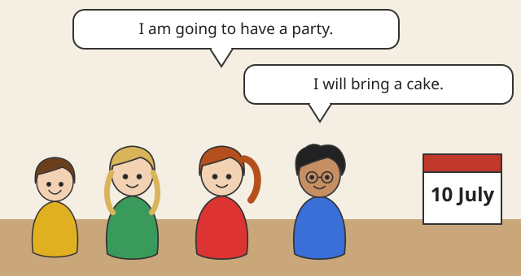

Will oder going to: Pfeil oder Punkt?
Mit einem KI-Tutor lernen
Ein KI-Tutor erklärt dir diese Seite und hilft dir bei den Aufgaben. Wähl deinen Assistenten:
Mit Claude öffnen Mit ChatGPT öffnen Mit Mistral Vibe öffnen
Du nutzt dein eigenes Konto beim Anbieter. Der Assistent ist kein Angebot von lernapps.net: lernapps liefert nur Inhalte und Aufgaben. Die Wahl gilt für alle Seiten, nur auf diesem Gerät.
Ellies Plan und Amirs Einfall

Von links: Peter (gelbe Jacke), Sophie (Zöpfe), Ellie (roter Pferdeschwanz) und Amir (Brille). Ellie und Amir sprechen.
Quelle: eigene Zeichnung. Lizenz: CC-BY-4.0.Ellie hat am 10. Juli Geburtstag. Sie erzählt: „I am going to have a party.“ Amir hört das zum ersten Mal und sagt gleich: „I will bring a cake.“ Bring heißt mitbringen, cake heißt Kuchen.
Aufgabe
Lösung
Gerade eben, als Ellie von der Party erzählt hat. richtige Antwort
Amir hat die Party gerade erst erfahren. Er entscheidet beim Sprechen.
Schon letzte Woche.
Dann hätte er schon vorher von der Party gewusst. Amir hört aber zum ersten Mal davon.
Gestern.
Gestern heißt yesterday. Amir hat es sich nicht gestern überlegt, sondern gerade eben.
Amir beschließt im Moment des Sprechens. Ellies Plan steht dagegen schon lange.
Das kannst du danach: Du entscheidest in klaren Fällen, ob du will oder going to brauchst, und sagst, warum.
Plan oder Einfall? Das Zeichen entscheidet
Auf dem Zeitstrahl liegen jetzt zwei Zeichen rechts von now. Ellies Satz hat den Pfeil: Der Plan steht schon, das ist going to. Amirs Satz hat den Punkt ohne Pfeil: Er beschließt gerade erst, das ist will.

Der Pfeil gehört zu going to, der Punkt ohne Pfeil gehört zu will.
Quelle: eigene Zeichnung. Lizenz: CC-BY-4.0.Zwei Fragen helfen dir: Steht der Plan schon fest, oder siehst du jetzt ein Anzeichen? Dann nimmst du going to. Beschließt du gerade erst, oder vermutest du nur? Dann nimmst du will.
| Zeichen | Wann | Beispiel |
|---|---|---|
| Pfeil von now | der Plan steht schon / ein Anzeichen ist da | I am going to have a party. |
| Punkt ohne Pfeil | du beschließt gerade erst / du vermutest | I will bring a cake. |
Merke
Auf dieser Seite sind die Fälle klar. Manchmal passen beide Formen, und es hängt davon ab, wie du es meinst.
| Ausdruck | Bedeutung |
|---|---|
| bring | mitbringen |
| cake | Kuchen |
| phone | Telefon / Handy |
| ring | klingeln |
| watch a film | einen Film anschauen |
| ticket | Eintrittskarte |
| hungry | hungrig |
| eat | essen |
| pizza | Pizza |
| rain | regnen |
| answer the phone | ans Telefon gehen |
| on 10 July | am 10. Juli |
Übung
Aufgabe
Lösung
Richtige Antwort: Peter is going to watch a film on Saturday. – Der Plan steht schon.; The phone rings. I will answer it. – Es wird gerade erst beschlossen.; I think it will rain. – Es ist nur eine Vermutung.
Ein Plan oder ein Anzeichen gehört zum Pfeil, going to. Ein Entschluss im Moment und eine Vermutung gehören zum Punkt ohne Pfeil, will.
Aufgabe
Lösung
I will answer it. richtige Antwort
Sophie entscheidet erst jetzt. Es gibt keinen Pfeil, sondern den Punkt, will.
I am going to answer it.
Das hieße, dass Sophie es schon vorher geplant hat. Sie entscheidet aber gerade erst.
I answer it every day.
Every day erzählt von einer Gewohnheit. Das Telefon klingelt jetzt einmal.
Wer im Moment des Sprechens entscheidet, nimmt will.
Aufgabe
Wähle will oder going to. Der deutsche Satz sagt dir, warum.
- Ellie hat ihre Party schon lange geplant. → Ellie … have a party on 10 July.
- Amir ist hungrig und beschließt gleich, eine Pizza zu essen. → Amir is hungry. He … eat a pizza.
- Amir und Peter haben schon Tickets für einen Film. → Amir and Peter have tickets. They … watch a film.
- Amir hört von der Party und beschließt gleich, etwas mitzubringen. → Amir … bring a cake.
Lösung
- Ellie is going to have a party on 10 July.
- Amir is hungry. He will eat a pizza.
- Amir and Peter have tickets. They are going to watch a film.
- Amir will bring a cake.
Aufgabe
Schreibe den Satz auf Englisch. Der deutsche Satz sagt dir, ob du will oder going to brauchst.
- Peter hat vor, einen Film anzuschauen. Die Karten sind schon gekauft.
- Das Telefon klingelt. Ich nehme es gleich ab.
- Amir hat gerade erst beschlossen, einen Kuchen mitzubringen.
Lösung
- Peter is going to watch a film.
- I will answer it. (auch richtig: I'll answer it.)
- Amir will bring a cake.
Aufgabe
Lösung
Richtige Antwort: Die Aussage stimmt nicht.
Die Tickets sind schon gekauft, der Plan steht. Dafür nimmst du going to. Richtig ist „I am going to watch a film on Saturday.“
Aufgabe
Hör zu und schreibe, was du hörst.
- KI
- KI
- KI
Lösung
- Amir will bring a cake.
- Ellie is going to have a party.
- Sophie will answer the phone.
Selbst sagen und schreiben
Aufgabe
Hör zu, sprich nach und nimm dich auf. Vergleiche dann mit dem Original.
Tipp
Hör den Satz zuerst. Sprich dann langsam nach und vergleiche deine Aufnahme mit dem Original.
- I will bring a cake.KI
- We are going to have a party.KI
- I will answer it.KI
Zum Aufnehmen braucht diese Aufgabe JavaScript. Die Beispiele kannst du auch ohne anhören.
Lösung
- I will bring a cake.
- We are going to have a party.
- I will answer it.
Offene Aufgabe
Sophie hängt zwei Karten an den Zeitstrahl, eine mit Pfeil und eine mit Punkt. Schreibe zwei Sätze: einen Plan mit going to und einen spontanen Einfall mit will.
Eine gute Antwort enthält:
Lösung
Peter is going to watch a film on Saturday. I will bring a cake.
Rückblick auf den ganzen Zeitstrahl
Mr Hill tritt einen Schritt zurück. Der Zeitstrahl ist fertig. Links liegt, was war, in der Mitte das jetzt, rechts, was kommt.

Alle Zeichen am Zeitstrahl: der Punkt links, der Bogen, die Punktreihe unter der Linie, die Welle, der Pfeil und der Punkt rechts. Die Tabelle darunter sagt, welches Zeichen zu welcher Zeitform gehört.
Quelle: eigene Zeichnung. Lizenz: CC-BY-4.0.| Zeichen | Zeitform | Beispiel |
|---|---|---|
| Punkt links von now | simple past | Peter played football yesterday. |
| Bogen bis now | present perfect | Peter has played football. |
| Punktreihe | simple present | Peter plays football every Saturday. |
| Welle über now | present progressive | Peter is playing football. |
| Pfeil von now | going to | Peter is going to play football. |
| Punkt rechts, ohne Pfeil | will | Peter will play football. |
Du kannst jetzt sagen, was immer ist, was gerade passiert, was war, was schon geschehen ist und was kommt. In der Klasse hängt der Strahl noch eine Weile an der Wand. Neue Karten kommen dazu, wenn du weiterlernst.